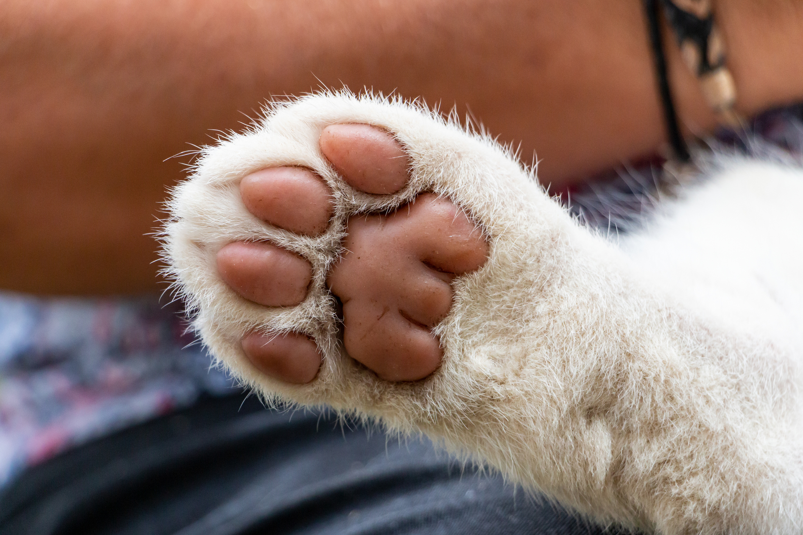

Higiene
Cuidado de patas y almohadillas: La base de su movimiento

Las almohadillas plantares son resistentes, pero no invencibles. Soportan el peso, absorben impactos y están en contacto directo con todo tipo de superficies. Una buena higiene de patas es esencial, especialmente para perros de ciudad.
1. Higiene post-paseo
Al volver de la calle, las patas traen suciedad, bacterias, restos de orina de otros animales y químicos del asfalto.
Adopta la rutina de limpiar sus patas con un paño húmedo o toallitas para mascotas al entrar a casa. Esto no solo mantiene tu hogar limpio, sino que evita que tu mascota lama sustancias tóxicas de sus patas, lo que podría causarle problemas digestivos.
2. Pelo interdigital: Un problema oculto
En muchas razas, el pelo crece entre las almohadillas. Este pelo atrapa humedad, barro y espigas, creando un ambiente perfecto para hongos y dermatitis.
Mantener este pelo recortado al ras de la almohadilla mejora la higiene, aumenta la tracción en pisos lisos (evitando resbalones) y permite detectar heridas o espinas clavadas más fácilmente.
3. Hidratación y protección
El asfalto caliente en verano o el frío extremo en invierno pueden agrietar las almohadillas. Una almohadilla sana debe ser áspera pero elástica, no seca ni cortada.
Existen bálsamos o cremas hidratantes específicas para almohadillas (no uses crema humana, ya que la piel se ablandaría demasiado y sería propensa a heridas). Aplicar una capa fina ayuda a mantenerlas protegidas.